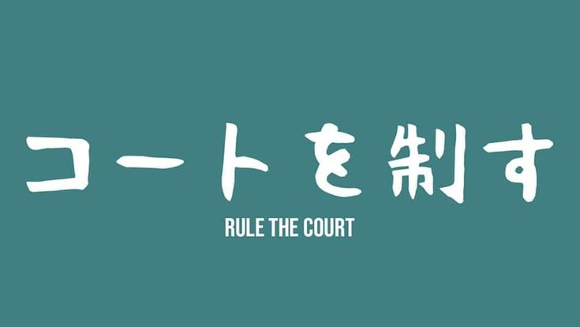

Aoba Johsai High or also known as Seijoh, is one of the strongest volleyball teams in the Miyagi Prefecture.
Seijoh is known for their amazing teamwork, strategy, and skill set. The team is led by their talented setter and captain, Tōru Oikawa. His leadership, precision, and need for perfection pushes his teammates to
perform at their best. With players like Iwaizumi Hajime as their vice-captain and ace wing spiker, he provides strength and stability through his powerful spikes and strong mentality. He also acts as a supporting pillar and the
level-headed or calm person of the team, contrary to Oikawa's recklessness because of his need to me a "genius". Aoba Johsai's playing style focuses on coordination, quick attacks, and of course, adaptability on the court.
Despite facing tough opponents like Inarizaki, Shiratorizawa, Date Tech, and more, they still prevail to be a strong team because of their determination, unity, and respect for the court and the game, they have become
a respected team on and off the court.
Aoba Johsai's Banner
RULE THE COURT

My favorite member!
Tōru Oikawa, the team captain and setter of Aoba Johsai, is also my favorite member 😁 He is known to be a charming, confident, but sort of cocky and a bit self-absorbed, but when you look at him better,
you can see that his behavior is actually a facade and is just built from fear of messing up and from his insecurities. He works hard to fulfill his dreams and to make sure that he doesn't let down his team, even if it means not really caring about his well-being.
Despite his flaws, he remains to be one of the most skilled and intellectual. Oikawa's leadership and determination are what make him a great leader and is the reason why he is so respected and admired. He is not only by his teammates, but also by his fans
and opponents. He inspires people through his mentality and mindset that success comes from hard work and perseverance. His character reminds us that even those who are skilled and confident still have their own problems and that true strength
comes from never giving up until you reach your goals.